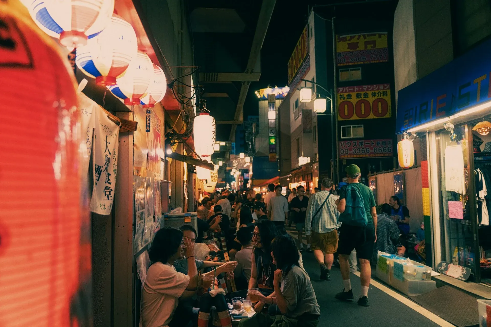

Tokio. Allein das Wort lässt einen an Shibuya-Kreuzung, den Senso-ji-Tempel und Harajuku denken – Orte, die auf jeder Reiseliste stehen und zu bestimmten Zeiten geradezu überquellen. Aber weißt du was? Das ist nur die Oberfläche dieser unfassbar vielschichtigen Stadt. Als jemand, der schon oft in Tokio war, möchte ich dir die Seiten zeigen, die die meisten Touristen komplett verpassen.

Yanaka – das alte Tokio, das den Krieg überlebt hat
Yanaka liegt im Norden der Stadt und fühlt sich an, als wäre man in einer Zeitkapsel gelandet. Hier wurden die alten Holzhäuser und engen Gassen nicht durch Bombenangriffe oder Nachkriegsbebauung zerstört. Das Ergebnis: ein authentisches, fast nostalgisches Stadtbild, das du sonst nirgends in Tokio findest.
Schlendere durch die Yanaka Ginza – eine alte Shōtengai (Einkaufsstraße), in der Omas Tofu verkaufen und Katzen auf den Dächern schlafen. Kein Kitsch, keine Touristenfallen. Einfach echtes Leben.
Tipp: Besuche den Yanaka-Friedhof – das klingt erstmal seltsam, ist aber wunderschön. Zwischen alten Gräbern wachsen riesige Kirschblüten, und Einheimische picknicken hier.
Koenji – Tokios Alternativszene
Wenn du wissen willst, wo die Kreativen, Musiker und Individualisten Tokios wohnen, dann fahr nach Koenji. Dieser Stadtteil ist das Herz der Vintage- und Untergrundkultur. Die Straßen sind vollgepackt mit Secondhand-Läden, Plattengeschäften und kleinen Live-Musikkneipen.
Hier findest du keine teuren Designerläden. Stattdessen: handgemachte Schmuckstücke, Vintage-Klamotten aus den 80ern und Kaffeebars, in denen man stundenlang sitzen kann.
Tipp: Komm an einem Wochenende – dann gibt es oft spontane Flohmärkte direkt vor dem Bahnhof.
Shimokitazawa – Für die Bohème-Seele
Shimokitazawa ist so klein, dass man es fast übersieht – aber genau das macht es so besonders. Diese lebhafte Gegend ist bekannt für ihre Theaterszene, unzählige Vintage-Shops und gemütliche Cafés, in denen Baristas ihren Kaffee mit derselben Ernsthaftigkeit zubereiten wie Chirurgen operieren.
Hier ist der Rhythmus langsamer als im Rest der Stadt. Kein Hochhaus, keine Wolkenkratzer. Nur Menschen, Musik und guter Kaffee.
Tipp: Geh nach Sonnenuntergang – die kleinen Bars und Restaurants füllen sich dann mit jungen Tokyotern, und die Energie ist einfach magisch.
Nezu-Jinja – der kleinere Bruder von Fushimi Inari
Du kennst sicher die berühmten roten Torii-Tore von Fushimi Inari in Kyoto. Was viele nicht wissen: Tokio hat sein eigenes, viel ruhigeres Äquivalent. Der Nezu-Jinja-Schrein liegt mitten im Viertel Yanaka und beherbergt ebenfalls hunderte von roten Toren, die sich einen Hügel hochschlängeln.
Und das Beste: Du wirst hier fast niemanden aus dem Ausland treffen. Nur Einheimische, ein bisschen Räucherduft und das Rauschen der Blätter.
Tipp: Im April ist es hier besonders schön – dann blühen Azaleen in leuchtendem Pink und Rot rund um den Schrein.
Kagurazaka – Klein-Paris in Tokio
Kagurazaka hat eine interessante Geschichte: Das Viertel war früher das Epizentrum des französischen Exils in Tokio, und diesen Charme hat es bis heute bewahrt. Enge Kopfsteinpflastergassen (die sogenannten yokochō), versteckte Restaurants und eine einzigartige Mischung aus japanischer und europäischer Architektur machen dieses Viertel zu einem echten Geheimtipp.
Tipp: Verliere dich absichtlich in den kleinen Seitengassen hinter der Hauptstraße. Dort stößt du auf winzige Restaurants ohne englische Speisekarten – und genau da ist das Essen am besten.

Toden Arakawa Linie – die letzte Straßenbahn Tokios
Tokio ist bekannt für sein perfektes U-Bahn-Netz. Aber wusstest du, dass es noch eine einzige Straßenbahn gibt? Die Toden Arakawa Linie (auch Sakura Tram genannt) rattert auf alten Gleisen durch Wohnviertel, die Touristen nie zu Gesicht bekommen.
Eine Fahrt mit dieser Bahn ist keine touristische Attraktion – sie ist einfach der Alltag der Tokioter. Du siehst Schulkinder, die aussteigen, Omis mit Einkaufstaschen und Gärten hinter Holzzäunen.
Tipp: Die Fahrt kostet nur 170 Yen. Kauf dir ein Ticket und fahr einfach die gesamte Strecke durch – das dauert ungefähr 45 Minuten und ist eines der authentischsten Erlebnisse, die Tokio zu bieten hat.
Musashi-Koyama – Das Einkaufszentrum, das nie endet
Unter diesem ruhigen Stadtteil im Westen Tokios versteckt sich die längste überdachte Einkaufspassage Tokios: die Musashi-Koyama Shopping Street Palm – 800 Meter lang, vollgepackt mit kleinen Läden, frischen Gemüsehändlern, Bäckereien und Ramen-Restaurants.
Hier kaufen die Locals ein. Keine Touristensouvenirs, keine überhöhten Preise. Einfach das tägliche Leben in einer japanischen Nachbarschaft.
Tipp: Komm mittags – dann zieht der Geruch frisch zubereiteter Mahlzeiten durch die Passage und die Auswahl an Mittagsmenüs (Teishoku) ist riesig und günstig.
Hamarikyu Gardens – Ruhe inmitten des Wahnsinns
Ja, die Hamarikyu Gardens sind auf Touristenkarten verzeichnet – aber die meisten fahren trotzdem daran vorbei. Das ist ein Fehler. Dieser traditionelle Garten liegt direkt neben dem Teamlab Borderless Museum und dem Hochhausviertel Shiodome. Der Kontrast ist atemberaubend.
Hier kannst du Matcha-Tee in einem traditionellen Teehaus trinken, das auf einer kleinen Insel im Mitten eines Salzweiher-Sees steht, während du auf Tokios Skyline blickst.
Tipp: Früh morgens ist der Garten fast leer. Dann gehört dir diese grüne Oase für eine Stunde ganz alleine.
Todoroki Ravine – ein Dschungel in der Stadt
Kaum zu glauben, aber wahr: In Tokio gibt es eine echte Schlucht. Das Todoroki Ravine im Westen der Stadt ist das einzige natürliche Tal innerhalb der Stadtgrenzen. Ein kleiner Fluss schlängelt sich durch dichten Bambus und alte Bäume – und du bist nur wenige U-Bahn-Stationen vom Stadtgetümmel entfernt.
Der Spaziergang durch die Schlucht dauert etwa 30–40 Minuten und endet an einem kleinen, versteckten Shinto-Schrein.
Tipp: Danach liegt das Café Setagaya direkt am Ausgang der Schlucht – perfekt für einen Eiskaffee nach dem Spaziergang.
Ebisu und Daikanyama – die schicke Alternative zu Harajuku
Ebisu und Daikanyama liegen nur einen kurzen Fußweg voneinander entfernt und bilden zusammen das vielleicht entspannteste, designaffine Viertel Tokios. Hier findest du Boutiquen, die wie Kunstgalerien aussehen, Buchläden, in denen man bis Mitternacht stöbern kann (schau dir die Daikanyama T-Site an), und Restaurants mit Innenhöfen, in denen Zeit keine Rolle spielt.
Tipp: Der Nakameguro-Kanal verbindet Daikanyama mit dem benachbarten Nakameguro. Ein Spaziergang entlang dieses Kanals – besonders abends, wenn die kleinen Bars ihr warmes Licht über das Wasser werfen – gehört zu den schönsten Momenten, die Tokio zu bieten hat.
Fazit
Tokio ist so groß, dass selbst Menschen, die jahrelang dort leben, immer wieder neue Orte entdecken. Lass dich nicht von den Touristenströmen in die immer gleichen Orte treiben. Schnapp dir eine Suica-Karte, spring in die Bahn und folge einfach deiner Neugier. Die besten Erlebnisse warten genau dort, wo kein Reiseführer hinzeigt.
Tokyo. The word alone conjures up Shibuya Crossing, Senso-ji temple and Harajuku – places on every travel list that overflow with visitors at peak times. But here's the thing: that's just the surface of this incredibly layered city. As someone who has spent a lot of time in Tokyo, I want to show you the sides that most tourists miss entirely.
Yanaka – the old Tokyo that survived the war
Yanaka sits in the north of the city and feels like stepping into a time capsule. The old wooden houses and narrow lanes here were never destroyed by bombing raids or post-war redevelopment. The result: an authentic, almost nostalgic streetscape you won't find anywhere else in Tokyo.
Stroll down Yanaka Ginza – an old shōtengai (covered shopping street) where grandmothers sell tofu and cats sleep on the rooftops. No kitsch, no tourist traps. Just real life.
Tip: Visit Yanaka Cemetery – it sounds odd at first, but it's genuinely beautiful. Cherry trees grow among old graves and locals have picnics here.
Koenji – Tokyo's alternative scene
If you want to know where Tokyo's creatives, musicians and free spirits live, head to Koenji. This neighbourhood is the heart of vintage and underground culture. The streets are packed with second-hand shops, record stores and small live music venues.
Tip: Come on a weekend – there are often spontaneous flea markets right outside the station.
Shimokitazawa – for the bohemian soul
Shimokitazawa is so small you could almost overlook it – which is exactly what makes it special. This lively area is known for its theatre scene, countless vintage shops and cosy cafés where baristas brew their coffee with surgical precision. The pace is slower here than anywhere else in the city.
Tip: Go after sunset – the small bars and restaurants fill up with young Tokyoites and the energy is simply magical.
Nezu-Jinja – Fushimi Inari's quieter sibling
You know the famous red torii gates of Fushimi Inari in Kyoto. What many people don't know: Tokyo has its own, much quieter equivalent. Nezu-Jinja shrine sits in the middle of the Yanaka neighbourhood and features hundreds of red gates winding up a hillside – almost no foreign visitors.
Tip: It's especially beautiful in April when azaleas bloom in vivid pink and red around the shrine.
Kagurazaka – little Paris in Tokyo
Kagurazaka has an interesting history: it was once the centre of French expat life in Tokyo, and it has preserved that charm to this day. Cobblestone alleyways (yokochō), hidden restaurants and a unique mix of Japanese and European architecture make this neighbourhood a genuine hidden gem.
Tip: Get intentionally lost in the small side alleys behind the main street. You'll stumble upon tiny restaurants with no English menu – and that's exactly where the best food is.
Toden Arakawa Line – Tokyo's last tram
Tokyo is famous for its perfect metro network. But did you know there is still one solitary tram? The Toden Arakawa Line (also called the Sakura Tram) rattles along old tracks through residential neighbourhoods tourists never see.
Tip: The ride costs just 170 yen. Buy a ticket and ride the entire route – it takes about 45 minutes and is one of the most authentic experiences Tokyo has to offer.
Musashi-Koyama – the shopping arcade that never ends
Hidden beneath this quiet western neighbourhood is Tokyo's longest covered shopping arcade: Musashi-Koyama Shopping Street Palm – 800 metres of small shops, fresh vegetable stalls, bakeries and ramen restaurants. This is where locals actually shop.
Tip: Come at lunchtime – the smell of freshly prepared meals drifts through the arcade and the lunch set menus (teishoku) are plentiful and cheap.
Hamarikyu Gardens – calm in the middle of the madness
Yes, Hamarikyu Gardens appear on tourist maps – but most people drive straight past. That's a mistake. This traditional garden sits right next to the Teamlab Borderless museum and the Shiodome skyscraper district. The contrast is breathtaking. Drink matcha tea in a traditional teahouse on a small island in a saltwater pond while gazing at Tokyo's skyline.
Tip: Early in the morning the garden is almost empty. This green oasis is all yours for an hour.
Todoroki Ravine – a jungle in the city
Hard to believe, but true: Tokyo has a real gorge. Todoroki Ravine in the west of the city is the only natural valley within the city limits. A small river winds through dense bamboo and old trees – and you're just a few metro stops from the urban bustle. The walk takes about 30–40 minutes and ends at a small hidden Shinto shrine.
Tip: Café Setagaya sits right at the exit of the ravine – perfect for an iced coffee after the walk.
Ebisu and Daikanyama – the stylish alternative to Harajuku
Ebisu and Daikanyama are a short walk apart and together form perhaps Tokyo's most relaxed, design-conscious neighbourhood. Boutiques that look like art galleries, bookshops you can browse until midnight (check out Daikanyama T-Site), and restaurants with inner courtyards where time doesn't matter.
Tip: The Nakameguro Canal connects Daikanyama to neighbouring Nakameguro. An evening stroll along the canal – when small bars cast their warm light over the water – is one of the most beautiful things Tokyo has to offer.
The takeaway
Tokyo is so vast that even people who've lived there for years keep discovering new places. Don't let the tourist crowds push you into the same old spots. Grab a Suica card, jump on a train and follow your curiosity. The best experiences are waiting exactly where no guidebook points.
Diese Orte live erleben?
Want to experience these places in person?
Ich kenne alle diese Viertel aus dem Effeff – und zeige dir gerne die Ecken, die du alleine nie finden würdest. Kleine Gruppe, flexible Route, echtes Tokio.
I know every one of these neighbourhoods inside out – and I'd love to show you the corners you'd never find on your own. Small group, flexible route, real Tokyo.
Tour anfragen